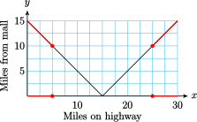

Subsection 6.4 Using the Absolute Value in Modeling
In the next Example, we use the absolute value function to model a problem about distances.
Example 6.4.10.
Marlene is driving to a new outlet mall on Highway 17. There is a gas station at Marlene's on-ramp, where she buys gas and resets her odometer to zero before getting on the highway. The mall is only 15 miles from Marlene’s on-ramp, but she mistakenly drives past the mall and continues down the highway. Marlene's distance from the mall is a function of how far she has driven on Highway 17.
- Make a table of values showing how far Marlene has driven on Highway 17 and how far she is from the mall.
- Make a graph of Marlene’s distance from the mall versus the number of miles she has driven on the highway. Which of the basic graphs from Section 2.2 does your graph most resemble?
- Find a piecewise defined formula that describes Marlene’s distance from the mall as a function of the distance she has driven on the highway.
-
Marlene gets closer to the mall for each mile that she has driven on the highway until she has driven 15 miles, and after that she gets farther from the mall.
Miles on highway \(0\) \(5\) \(10\) \(15\) \(20\) \(25\) \(30\) Miles from mall \(15\) \(10\) \(5\) \(0\) \(5\) \(10\) \(15\) -
We plot the points in the table to obtain the graph shown below. This graph looks like the absolute value function defined in Section 3, except that the vertex is the point \((15, 0)\) instead of the origin.

-
Let \(x\) represent the number of miles on the highway and \(f (x)\) the number of miles from the mall. For \(x\)-values less than \(15\text{,}\) the graph is a straight line with slope \(-1\) and \(y\)-intercept at \((0, 15)\text{,}\) so its equation is \(y = -x + 15\text{.}\) Thus,
\begin{equation*} f (x) = -x + 15~~~ \text{ when } ~~~0 \le x \lt 15 \end{equation*}On the other hand, when \(x \ge 15\text{,}\) the graph of \(f\) is a straight line with slope \(1\) that passes through the point \((15, 0)\text{.}\) The point-slope form of this line is
\begin{equation*} y = 0 + 1(x - 15) \end{equation*}so \(y = x - 15\text{.}\) Thus,
\begin{equation*} f (x) = x - 15~~~ \text{ when }~~~ x \ge 15 \end{equation*}Combining the two pieces, we obtain
\begin{equation*} f (x) = \begin{cases} -x + 15~~~ \amp \text{when }~~~ 0\le x\lt 15\\ x - 15~~~ \amp \text{when }~~~ x\ge 15 \end{cases} \end{equation*}The graph of \(f (x)\) is a part of the graph of \(y = \abs{x - 15}\text{.}\) If we think of the highway as a portion of the real number line, with Marlene’s on-ramp located at the origin, then the outlet mall is located at \(15\text{.}\) Marlene's coordinate as she drives along the highway is \(x\text{,}\) and the distance from Marlene to the mall is given by \(f (x) = \abs{x - 15}\text{.}\)
Checkpoint 6.4.11.
- Use the graph in Example 6.4.10 to determine how far Marlene has driven when she is within \(5\) miles of the mall. Write and solve an absolute value inequality to verify your answer.
- Write and solve an absolute value inequality to determine how far Marlene has driven when she is at least \(10\) miles from the mall.
-
\(\abs{x-15} \lt 5\text{;}\) \(~10 \lt x \lt 20\)

-
\(\abs{x-15} \ge 10\text{;}\) \(~x\le 5~\) or \(~x\ge25\)
